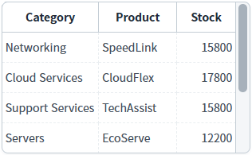
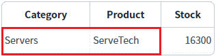
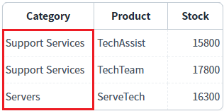

DataList의 'removeColumnFilter' 메소드와 'clearFilter' 메소드를 사용하여 컬럼에 적용된 필터를 해제하는 예제입니다.
이 예제에서 사용한 메소드는 다음과 같습니다.
removeColumnFilter : 컬럼 단위로 필터를 해제합니다.
clearFilter : 모든 필터를 해제합니다.
컬럼 단위 필터 해제하기
모든 컬럼의 필터 해제하기
'DataList의 데이터 초기화' 버튼
기능 : DataList에 적용된 필터를 모두 해제하고 초기 데이터를 설정합니다.
1
STEP 1: 초기 상태 확인하기
필터를 적용할 DataList와 GridView와 연결되어 있습니다.
GridView를 통해 필터가 적용된 데이터를 확인할 수 있습니다.
초기 상태는 필터가 적용되지 않은 상태입니다.
GridView는 예제 영역 '결과 확인용 GridView' 아래에 구성되어 있습니다.Image 1.브라우저(Chrome) 실행 예시

2
STEP 2: 'Product' 컬럼과 'Category' 컬럼에 필터를 적용합니다.
"1.1 필터 적용하기 - 'Product' 컬럼의 값에 'Tech'이 포함되고 'Category' 컬럼의 값이 'Servers'와 일치" 버튼을 클릭합니다.3
STEP 3: 실행된 결과를 확인합니다.
'Product' 컬럼의 값에 'Tech'이 포함되고 'Category' 컬럼의 값이 'Servers'와 일치하는 데이터가 출력됩니다.
Image 2.브라우저(Chrome) 실행 예시

4
STEP 4: 'Category' 컬럼에 적용된 필터를 해제합니다.
"1.2 'Category' 컬럼의 필터 해제하기" 버튼을 클릭합니다.5
STEP 5: 실행된 결과를 확인합니다.
'Category' 컬럼에 적용된 필터가 해제되고, 'Product' 컬럼의 값에 'Tech'이 포함된 결과가 출력됩니다. 'Product' 컬럼에 적용된 필터의 'condition'의 값이 'and'로 설정되어 있으므로, 원본 데이터와의 교집합으로 출력됩니다.
만약 'Product' 컬럼에 적용된 필터의 'condition'의 값이 'or'로 설정되어 있다면, 원본 데이터와 합집합 조건이 되어 모든 데이터가 출력됩니다.
Image 3.브라우저(Chrome) 실행 예시

6
STEP 6: 'Product' 컬럼에 적용된 필터를 해제합니다.
"1.3 'Product' 컬럼의 필터 해제하기" 버튼을 클릭합니다.7
STEP 7: 실행된 결과를 확인합니다.
DataList에 적용된 컬럼의 필터가 없으므로 모든 데이터가 출력됩니다.
Image 4.브라우저(Chrome) 실행 예시
1
STEP 1: 초기 상태 확인하기
필터를 적용할 DataList와 GridView와 연결되어 있습니다.
GridView를 통해 필터가 적용된 데이터를 확인할 수 있습니다.
초기 상태는 필터가 적용되지 않은 상태입니다.
GridView는 예제 영역 '결과 확인용 GridView' 아래에 구성되어 있습니다.Image 5.브라우저(Chrome) 실행 예시
2
STEP 2: 'Product' 컬럼과 'Category' 컬럼에 필터를 적용합니다.
"2.1 필터 적용하기 - 'Product' 컬럼의 값에 'Tech'이 포함되고 'Category' 컬럼의 값이 'Servers'와 일치" 버튼을 클릭합니다.3
STEP 3: 실행된 결과를 확인합니다.
'Product' 컬럼의 값에 'Tech'이 포함되고 'Category' 컬럼의 값이 'Servers'와 일치하는 데이터가 출력됩니다.
Image 6.브라우저(Chrome) 실행 예시
4
STEP 4: 모든 컬럼에 적용된 필터를 해제합니다.
"2.2 모든 컬럼의 필터 해제하기" 버튼을 클릭합니다.5
STEP 5: 실행된 결과를 확인합니다.
DataList에 적용된 컬럼의 필터가 없으므로 모든 데이터가 출력됩니다.
Image 7.브라우저(Chrome) 실행 예시
DataList의 'removeColumnFilter' 메소드를 사용하여 스크립트를 작성합니다. 'removeColumnFilter' 메소드의 첫 번째 인자에 DataList의 컬럼의 ID 또는 컬럼의 인덱스를 설정합니다.
Example 1.Script
// DataList 'dlt_exam'의 'Category' 컬럼에 적용된 필터를 해제합니다. dlt_exam.removeColumnFilter("category");
필터를 해제한 후에도 필터가 적용된 컬럼이 있고, 남아 있는 모든 필터의 'condition' 값이 'or'로 설정되어 있다면, 원본 데이터와 합집합 조건이 되어 모든 데이터가 출력됩니다.
첫 번째 필터의 조건 'condition'의 값은 반드시 'and'로 설정되어야 한다는 점을 유의해야 합니다.
DataList의 'clearFilter' 메소드를 사용하여 스크립트를 작성합니다.
Example 2.Script
// DataList 'dlt_exam'에 적용된 모든 필터를 해제합니다.
dlt_exam.clearFilter();removeColumnFilter( col )
clearFilter( )